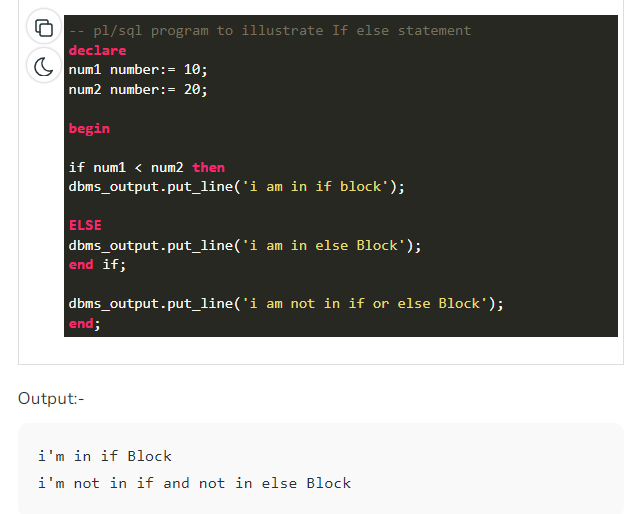

PL SQL
-> PL/SQL Introduction
PL/SQL is a block structured language that enables developers to combine the power of SQL with
procedural statements.All the statements of a block are passed to oracle engine all at once
which increases processing speed and decreases the traffic.
Basics of PL/SQL
•PL/SQL stands for Procedural Language extensions to the Structured Query Language (SQL).
PL/SQL is a combination of SQL along with the procedural features of programming languages.
Oracle uses a PL/SQL engine to processes the PL/SQL statements.
PL/SQL includes procedural language elements like conditions and loops. It allows declaration of
constants and variables, procedures and functions, types and variable of those types and
triggers.
Disadvantages of SQL:
SQL doesn’t provide the programmers with a technique of condition checking, looping and
branching.
SQL statements are passed to Oracle engine one at a time which increases traffic and decreases
speed.
SQL has no facility of error checking during manipulation of data.
Features of PL/SQL:
PL/SQL is basically a procedural language, which provides the functionality of decision making, iteration and many more features of procedural programming languages.
PL/SQL can execute a number of queries in one block using single command.
One can create a PL/SQL unit such as procedures, functions, packages, triggers, and types, which are stored in the database for reuse by applications.
PL/SQL provides a feature to handle the exception which occurs in PL/SQL block known as exception handling block.
Applications written in PL/SQL are portable to computer hardware or operating system where Oracle is operational.
PL/SQL Offers extensive error checking.
Differences between SQL and PL/SQL:
Structure of PL/SQL Block:
PL/SQL extends SQL by adding constructs found in procedural languages, resulting in a structural language that is more powerful than SQL. The basic unit in PL/SQL is a block. All PL/SQL programs are made up of blocks, which can be nested within each other.
Typically, each block performs a logical action in the program. A block has the following structure:
Declare section starts with DECLARE keyword in which variables, constants, records as cursors can be declared which stores data temporarily. It basically consists definition of PL/SQL identifiers. This part of the code is optional.
Execution section starts with BEGIN and ends with END keyword.This is a mandatory section and here the program logic is written to perform any task like loops and conditional statements. It supports all DML commands, DDL commands and SQL*PLUS built-in functions as well.
Exception section starts with EXCEPTION keyword.This section is optional which contains statements that are executed when a run-time error occurs. Any exceptions can be handled in this section.
Programs :
1. Example to show how to declare variables in PL/SQL :
2. Displaying output
3. Sum of two Variables:
4. Reverse a number in PL/SQL
5. Factorial of a number in PL/SQL

6. Print Patterns in PL/SQL
7. Decision Making in PL/SQL (if-then , if-then-else, Nested if-then, if-then-elsif-then-else )

Print different star patterns in SQL

GCD of two numbers in PL/SQL
Convert distance from km to meters and centimeters in PL/SQL
Sum of digits of a number in PL/ SQL
Sum and average of three numbers in PL/SQL
Check whether a string is palindrome or not in PL/SQL
Count odd and even digits in a number in PL/SQL
Area and Perimeter of a circle in PL/SQL
Greatest number among three given numbers in PL/SQL
Concatenation of strings in PL/SQL